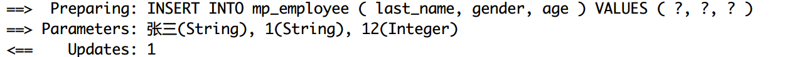
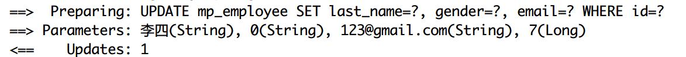
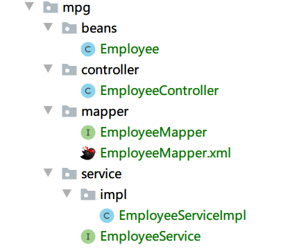

MyBatis-Plus 简介 Mybatis-plus本质上是Mybatis的增强插件，为了简化开发和提高开发效率而生
特性
无侵入 ：只做增强不做改变，引入它不会对现有工程产生影响，如丝般顺滑强大的 CRUD 操作 ：内置通用 Mapper、通用 Service，仅仅通过少量配置即可实现单表大部分 CRUD 操作，更有强大的条件构造器，满足各类使用需求支持 Lambda 形式调用 ：通过 Lambda 表达式，方便的编写各类查询条件，无需再担心字段写错支持主键自动生成 ：支持多达 4 种主键策略（内含分布式唯一 ID 生成器 - Sequence），可自由配置，完美解决主键问题内置代码生成器 ：采用代码或者 Maven 插件可快速生成 Mapper 、 Model 、 Service 、 Controller 层代码，支持模板引擎，更有超多自定义配置等您来使用内置分页插件 ：基于 MyBatis 物理分页，开发者无需关心具体操作，配置好插件之后，写分页等同于普通 List 查询分页插件支持多种数据库 ：支持 MySQL、MariaDB、Oracle、DB2、H2、HSQL、SQLite、Postgre、SQLServer 等多种数据库内置性能分析插件 ：可输出 Sql 语句以及其执行时间，建议开发测试时启用该功能，能快速揪出慢查询
SpringBoot集成配置 数据库配置 准备好数据库中的表和测试数据
1 2 3 4 5 6 7 8 9 10 11 12 13 14 15 16 17 18 19 20 21 22 23 24 25 26 27 28 29 30 31 DROP TABLE IF EXISTS `mp_employee` ;CREATE TABLE `mp_employee` ( `id` bigint (20 ) NOT NULL PRIMARY KEY AUTO_INCREMENT COMMENT '主键' , `last_name` varchar (50 ) COMMENT '名称' , `email` varchar (50 ) COMMENT 'Email邮箱' , `gender` char (1 ) COMMENT '性别：0-男，1-女' , `age` int ) ENGINE = InnoDB DEFAULT CHARSET = utf8; INSERT INTO mp_employee(last_name, email, gender, age)VALUES ('Tom' , 'tom@qq.com' , 0 , 22 );INSERT INTO mp_employee(last_name, email, gender, age)VALUES ('James' , 'james@qq.com' , 0 , 18 );INSERT INTO mp_employee(last_name, email, gender, age)VALUES ('july' , 'july@qq.com' , 1 , 29 );INSERT INTO mp_employee(last_name, email, gender, age)VALUES ('jane' , 'jane@qq.com' , 1 , 16 );INSERT INTO mp_employee(last_name, email, gender, age)VALUES ('black' , 'black@qq.com' , 0 , 25 );INSERT INTO mp_employee(last_name, email, gender, age)VALUES ('white' , 'white@qq.com' , 1 , 24 );
创建对应的JavaBean 在com.hitopop.entity包中创建实体类Employee.java
1 2 3 4 5 6 7 8 9 10 11 12 13 14 15 16 17 18 19 20 21 22 23 24 25 26 27 28 29 30 @Data @TableName ("mp_employee" )public class Employee @TableId (type = IdType.AUTO) private Long id; @TableField ("last_name" ) private String lastName; private String email; private String gender; private Integer age; }
@TableName指定了实体类对应的数据库表名
@TableId指引属性为数据库的主键，而且指定了type为auto自增加，Mybatis-Plus会为我们自动将插入数据库的主键注入到对象中去
@TableFiled是用在当数据库的字段名和Java实体类字段名称不同时用来对应的
引入依赖 pom.xml中引入Mybatis-plus插件的相关依赖，除了需要的配置之外，还需要lombok和mysql连接等依赖
1 2 3 4 5 6 7 8 9 10 11 12 13 14 15 16 17 18 19 20 21 22 23 24 25 <dependencies > <dependency > <groupId > org.springframework.boot</groupId > <artifactId > spring-boot-starter</artifactId > </dependency > <dependency > <groupId > com.baomidou</groupId > <artifactId > mybatis-plus-boot-starter</artifactId > <version > 3.3.1</version > </dependency > <dependency > <groupId > mysql</groupId > <artifactId > mysql-connector-java</artifactId > </dependency > <dependency > <groupId > org.projectlombok</groupId > <artifactId > lombok</artifactId > <optional > true</optional > </dependency > <dependency > <groupId > org.springframework.boot</groupId > <artifactId > spring-boot-starter-test</artifactId > <scope > test</scope > </dependency > </dependencies >
引入mybatis-plus-boot-starter之外不需要再单独引入Mybatis和Mybatis和spring的整合包了，mybatis-plus帮我们管理了这些依赖
添加配置 application.yml中配置数据源等信息
1 2 3 4 5 6 7 8 9 10 spring: datasource: driver-class-name: com.mysql.cj.jdbc.Driver username: root password: root url: jdbc:mysql://127.0.0.1:3306/springboot-mybatis?characterEncoding=utf8&useUnicode=true&serverTimeZone=Asia/Shanghai mybatis-plus: configuration: log-impl: org.apache.ibatis.logging.stdout.StdOutImpl
上次已经说过了，要使用最新的com.mysql.cj.jdbc.Driver驱动器
log-impl配置是为了在控制台中看到sql语句
插件通用配置 在application.yml中可以配置很多和插件有关的信息
常见的有：
1 2 3 4 5 6 7 8 9 10 11 12 13 mybatis-plus: configuration: log-impl: org.apache.ibatis.logging.stdout.StdOutImpl mapper-locations: classpath:mapper/**/*.xml global-config: db-config: id-type: auto table-prefix: tb_
通用CRUD操作 此时我们已经有了mp_empolyee表，如果想要使用最基本的CRUD操作，以前使用Mybatis时我们是怎么做的呢？
编写EmployeeMapper接口，在接口中定义Dao层的接口
编写EmployeeMapper接口对应的EmployeeMapper.xml文件，手动编写接口中定义的sql语句
当程序中的实体类越来越多的时候就会发现这样对每个表的最简单的CRUD操作都手动写sql语句是很累的一件事。
编写接口 基于Mybatis-Plus，我们如果只需要最简单的CRUD操作，我们只需要在创建出的Mapper接口中继承BaseMapper接口即可获得基本的CRUD方法
在com.hitopo.mapper中创建出EmployeeMapper.java接口
1 2 public interface EmployeeMapper extends BaseMapper <Employee > }
这个接口中并不需要有任何方法，所有的简单CRUD操作全部都在BaseMapper中存在了，当然，如果你想要有一些自定义的方法，也可以在该接口中定义
基本配置 写好接口类之后需要让spring帮我们管理这个接口，只需要在Application.java的主启动类上面添加@MapperScan注解扫描接口类
1 2 3 4 5 6 7 8 9 @SpringBootApplication @MapperScan ("com.hitopo.mapper" )public class SpringbootMybatisPlusApplication public static void main (String[] args) SpringApplication.run(SpringbootMybatisPlusApplication.class , args ) ; } }
测试 查询 1 2 3 4 5 6 7 8 9 10 11 12 13 14 15 16 17 18 19 20 21 22 23 24 25 26 27 28 29 30 31 32 33 34 35 @Test public void testSelect () Employee employee = employeeMapper.selectById(3L ); log.info("selectById(),employee={}" , employee); log.info("--------------------" ); List<Employee> employeeList1 = employeeMapper.selectList(null ); log.info("selectList(),employeeList1={}" , employeeList1); log.info("--------------------" ); List<Long> ids = new ArrayList<>(); ids.add(2L ); ids.add(3L ); ids.add(5L ); List<Employee> employeeList2 = employeeMapper.selectBatchIds(ids); log.info("selectBatchIds(),employeeList2={}" , employeeList2); log.info("--------------------" ); Employee tom = employeeMapper.selectOne(new QueryWrapper<Employee>().eq("last_name" , "Tom" )); log.info("selectOne(),employee={}" , tom); log.info("--------------------" ); Map<String, Object> map = new HashMap<>(); map.put("last_name" , "James" ); map.put("age" , 18 ); List<Employee> james = employeeMapper.selectByMap(map); log.info("selectByMap(),employee={}" , james); log.info("--------------------" ); }
上面的查询操作中很多时候需要查询参数时可以使用selectByMap，但是Map的只能封装相等条件，后面会说如何封装查询参数
保存 1 2 3 4 5 6 7 8 9 10 11 @Test public void testSave () Employee employee = new Employee(); employee.setLastName("张三" ); employee.setAge(12 ); employee.setGender("1" ); int result = employeeMapper.insert(employee); log.info("保存成功，受影响的行数是：{}" , result); log.info("employee.getId():{}" , employee.getId()); }
insert只有一个方法，在实体类中配置主键的类型是idType.auto之后插入数据库之后，Mybatis-Plus插件会自动帮我们回写id属性到employee对象中，

观察sql语句，发现保存的employee中属性为null的的email发送的sql语句中并没有包括，这就是动态的特性
这里又引入了一个话题：既然插件是用null来帮我们判断是否需要插入某个字段，那么在实体类中最好不要使用基本数据类型，如int，boolean等，因为它们存在默认值，int的默认值是0，boolean的默认值的false。
应该使用它们的包装类Integer和Boolean，它们默认值就是null。基本数据类型没有赋值也会存在值，插件不好判断到底该属性是实际存在还是本来就是默认值不应该存在，导致歧义。
更新 1 2 3 4 5 6 7 8 9 10 @Test public void testUpdate () Employee employee = new Employee(); employee.setId(7L ); employee.setLastName("李四" ); employee.setGender("0" ); employee.setEmail("123@gmail.com" ); int result = employeeMapper.updateById(employee); log.info("受影响的行数是：{}" , result); }
同理，根据id更新记录时候，不存在employee对象中的属性age在发送的更新的sql语句中不会存在，该函数返回值同样是受影响的行数

删除 1 2 3 4 5 6 7 8 9 10 11 12 @Test public void testDelete () int result1 = employeeMapper.deleteById(6L ); int result2 = employeeMapper.deleteBatchIds(Arrays.asList(2L , 4L )); Map<String, Object> map = new HashMap<>(); map.put("age" , 12 ); int result3 = employeeMapper.deleteByMap(map); log.info("deleteById()受影响的行数:{}" , result1); log.info("deleteBatchIds()受影响的行数:{}" , result2); log.info("deleteByMap()受影响的行数:{}" , result3); }
总结 以上还有一些方法没有列出测试是因为它们都是用了条件查询对象QueryWrapper作为参数传递，统一放到下一章节，从上面简单的CRUD操作中就可以看出，我们不需要手写任何的sql语句就可以实现简单的CRUD操作，实在是方便。
条件构造器
QueryWrapper(LambdaQueryWrapper) 和 UpdateWrapper(LambdaUpdateWrapper) 的父类没有任何关联行为
查询方式
说明
allEq
基于map的=
eq
等于
ne
不等于
gt
大于
lt
小于
ge
大于等于
le
小于等于
between
在某两个数的区间内
notBetween
不在某两个值的区间内
like
模糊匹配
not like
模糊匹配
in
在某个区间内
groupBy
分组
orderBy
排序
or
或者
and
且
apply
在sql语句最后拼接（可能有sql注入的风险）
以上就是常见的一些方法，还有一些没有列出，可以看官方文档
https://mp.baomidou.com/guide/wrapper.html#service-java
使用上述的方法就是在需要使用QueryWrapper或者UpdateWrapper的时候使用new QueryWrapper<>().eq().ne().groupBy()这样
整合测试 1 2 3 4 5 6 7 8 9 10 11 12 13 14 15 16 17 @Test public void testConditionalOps () List<Employee> list = employeeMapper.selectList(new QueryWrapper<Employee>().between("age" , 12 , 25 )); log.info("selectList()，年龄在12-25的职工列表：{}" , list); int result = employeeMapper.delete(new QueryWrapper<Employee>().eq("last_name" , "张三" )); log.info("delete(),删除lastname是张三的记录" ); Employee employee = new Employee(); employee.setAge(20 ); employeeMapper.update(employee, new UpdateWrapper<Employee>().like("email" , "@qq.com" )); log.info("update(),修改email中包含@qq.com字符串的记录的年龄为20" ); }
插件 分页插件 只需要在spring容器中注入PaginationInterceptor，对paginationInterceptor进行配置即可使用
在com.hitopo.config中创建MybatisPlusConfig.java
1 2 3 4 5 6 7 8 9 10 11 12 13 14 15 @Configuration public class MybatisPlusConfig @Bean public PaginationInterceptor paginationInterceptor () PaginationInterceptor interceptor = new PaginationInterceptor(); interceptor.setLimit(500 ); interceptor.setCountSqlParser(new JsqlParserCountOptimize(true )); return interceptor; } }
这样之后使用selectPage方法就可以实现分页的效果了
1 2 3 4 5 6 7 8 9 @Test public void testPage () IPage<Employee> iPage = employeeMapper.selectPage(new Page<>(2 , 3 ), null ); log.info("数据：{}" , iPage.getRecords()); log.info("当前页：{}" , iPage.getCurrent()); log.info("页的大小：{}" , iPage.getSize()); log.info("总页数：{}" , iPage.getPages()); log.info("总记录数：{}" , iPage.getTotal()); }
代码生成工具 AutoGenerator 是 MyBatis-Plus 的代码生成器，通过 AutoGenerator 可以快速生成 Entity、Mapper、Mapper XML、Service、Controller 等各个模块的代码，极大的提升了开发效率。
AutoGenerator提供了大量自定义设置，生成的代码都是基于Java代码来生成的
添加依赖 MyBatis-Plus 从 3.0.3 之后移除了代码生成器与模板引擎的默认依赖，需要手动添加相关依赖：
1 2 3 4 5 6 7 8 9 10 11 <dependency > <groupId > com.baomidou</groupId > <artifactId > mybatis-plus-generator</artifactId > <version > 3.2.0</version > </dependency > <dependency > <groupId > org.apache.velocity</groupId > <artifactId > velocity-engine-core</artifactId > <version > 2.2</version > </dependency >
配置生成器 1 2 3 4 5 6 7 8 9 10 11 12 13 14 15 16 17 18 19 20 21 22 23 24 25 26 27 28 29 30 31 32 33 34 35 36 37 38 39 40 41 42 43 44 45 46 47 @Test public void testGenerator () AutoGenerator generator = new AutoGenerator(); GlobalConfig globalConfig = new GlobalConfig(); globalConfig.setActiveRecord(true ) .setAuthor("hitopo" ) .setOutputDir("C:\\Users\\Administrator\\Desktop\\springboot-learn\\springboot-mybatis-plus\\src\\main\\java" ) .setFileOverride(true ) .setIdType(IdType.AUTO) .setServiceName("%sService" ) .setBaseResultMap(true ) .setBaseColumnList(true ); generator.setGlobalConfig(globalConfig); DataSourceConfig dataSourceConfig = new DataSourceConfig(); dataSourceConfig.setDbType(DbType.MYSQL) .setDriverName("com.mysql.cj.jdbc.Driver" ) .setUsername("root" ) .setPassword("root" ) .setUrl("jdbc:mysql://127.0.0.1:3306/springboot-mybatis?useUnicode=true&characterEncoding=utf8&serverTimezone=Asia/Shanghai" ); generator.setDataSource(dataSourceConfig); StrategyConfig strategyConfig = new StrategyConfig(); strategyConfig.setCapitalMode(true ) .setNaming(NamingStrategy.underline_to_camel) .setTablePrefix("mp_" ) .setInclude("mp_employee" ); generator.setStrategy(strategyConfig); PackageConfig packageConfig = new PackageConfig(); packageConfig.setParent("com.hitopo.mpg" ) .setMapper("mapper" ) .setService("service" ) .setController("controller" ) .setEntity("beans" ) .setXml("mapper" ); generator.setPackageInfo(packageConfig); generator.execute(); }
此时运行该测试，会在指定的位置生成自动生成的代码：

这里生成的EmpolyeeServiceImpl继承了ServiceImpl
在ServiceImpl中已经完成了Mapper对象的注入，直接在EmpolyeeServiceImpl中使用baseMapper即可，不需要自己再进行注入
在ServiceImpl中也帮我们提供了常用的CRUD方法，基本的CRUD在Service中也不需要再自己写方法
逻辑删除 配置更改
1 2 3 4 5 6 mybatis-plus: global-config: db-config: logic-delete-field: flag logic-delete-value: 1 logic-not-delete-value: 0
局部配置：实体类的字段上添加@TableLogic注解，此方式会覆盖全局配置，如果没有注解，则会默认使用全局配置
注意：
配置逻辑删除之后，再使用Mybatis-Plus提供的删除和查询功能都会自动带上逻辑存在的字符。
也就是说，查询没有添加条件时默认只能查询到未删除记录，删除也转变成了Update语句，如果想要得到所有的记录或者想要拿到逻辑上删除的字段，只能自己写sql语句。